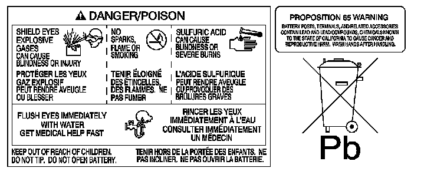
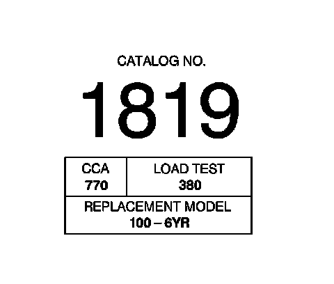

Battery Description and Operation
BATTERY DESCRIPTION AND OPERATION

CAUTION: Batteries produce explosive gases, contain corrosive acid, and supply levels of electrical current high enough to cause burns. Therefore, to reduce the risk of personal injury when working near a battery:
- Always shield your eyes and avoid leaning over the battery whenever possible.
- Do not expose the battery to open flames or sparks.
- Do not allow the battery electrolyte to contact the eyes or the skin. Flush immediately and thoroughly any contacted areas with water and get medical help.
- Follow each step of the jump starting procedure in order.
- Treat both the booster and the discharged batteries carefully when using the jumper cables.
IMPORTANT: Because of the materials used in the manufacture of automotive lead-acid batteries, dealers and service shops that handle them are subject to various regulations issued by OSHA, EPA, DOT, and various state or local agencies. Other regulations may also apply in other locations. Always know and follow these regulations when handling batteries.
Batteries that are no longer wanted must be disposed of by an approved battery recycler and must never be thrown in the trash or sent to a landfill.
Batteries that are not part of the vehicle itself, not the battery under the hood, must only be transported on public streets for business purposes via approved hazardous material transportation procedures.
Battery storage, charging, and testing facilities in repair shops must meet various requirements for ventilation, safety equipment, material segregation, etc.
The maintenance-free battery is standard. There are no vent plugs in the cover. The battery is completely sealed except for 2 small vent holes in the side. These vent holes allow the small amount of gas that is produced in the battery to escape.
The battery has 3 functions as a major source of energy:
- Engine cranking
- Voltage stabilizer
- Alternate source of energy with generator overload

The battery specification label, example, contains information about the following:
- The test ratings
- The original equipment catalog number
- The recommended replacement model number
Battery Ratings
A battery may have 3 ratings:
- Amp hour (AH)
- Reserve capacity (RC)
- Cold cranking amperage (CCA)
When a battery is replaced, use a battery with similar ratings. Refer to the battery specification label on the original battery or refer to Battery Usage
Amp Hour (AH)
The amp hour rating of a battery is the amount of time it takes a fully charged battery, being discharged at a constant rate of 1 amperes and a constant temperature of 27°C (80°F), to reach a terminal voltage of 10.5 volts. Refer to Battery Usage for the amp hour rating of the original equipment battery.
Reserve Capacity (RC)
Reserve capacity is the amount of time in minutes it takes a fully charged battery, being discharged at a constant rate of 25 amperes and a constant temperature of 27°C (80°F), to reach a terminal voltage of 10.5 volts. Refer to Battery Usage for the reserve capacity rating of the original equipment battery.
Cold Cranking Amperage (CCA)
The cold cranking amperage is an indication of the ability of the battery to crank the engine at cold temperatures. The cold cranking amperage rating is the minimum amperage the battery must maintain for 30 seconds at -18°C (0°F) while maintaining at least 7.2 volts. Refer to Battery Usage for the cold cranking amperage rating for this vehicle.
Auxiliary Battery
Auxiliary batteries are an available option on vehicles where many accessories can be utilized such as TVs, radios, lights, computers, etc. The charging of these batteries is explained in charging system description and operation. Also, the auxiliary battery is only for accessory use and not part of the starting system.